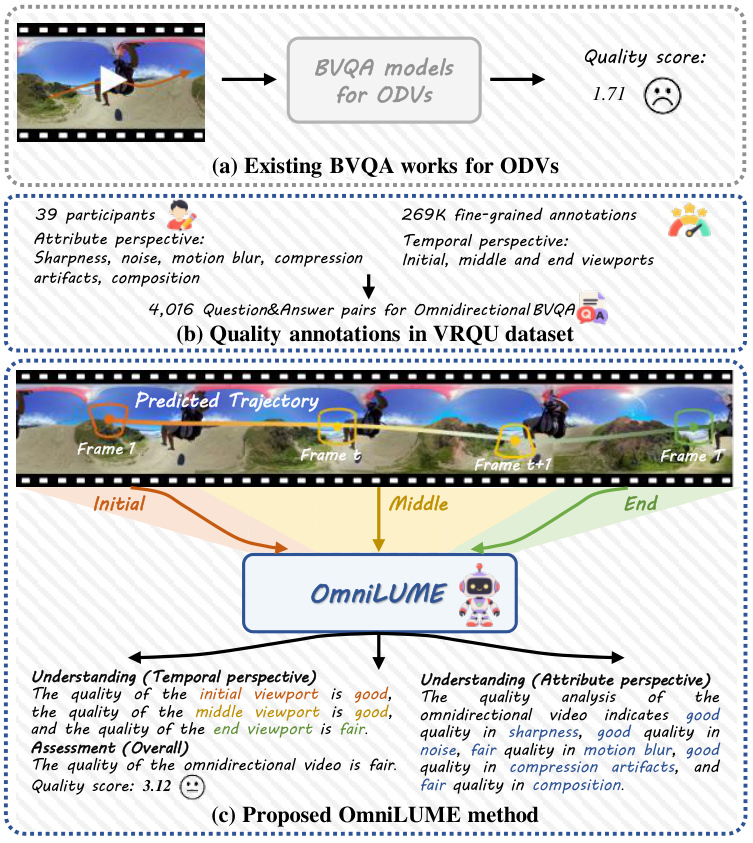
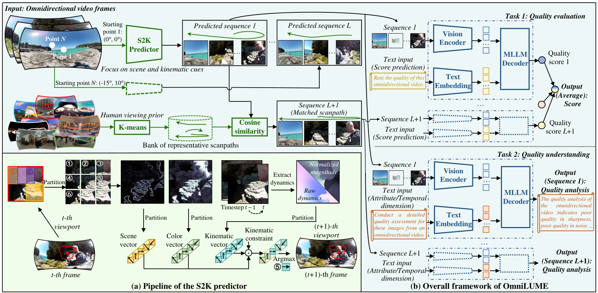
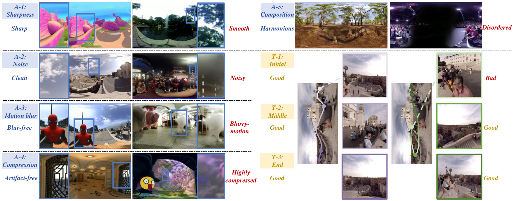
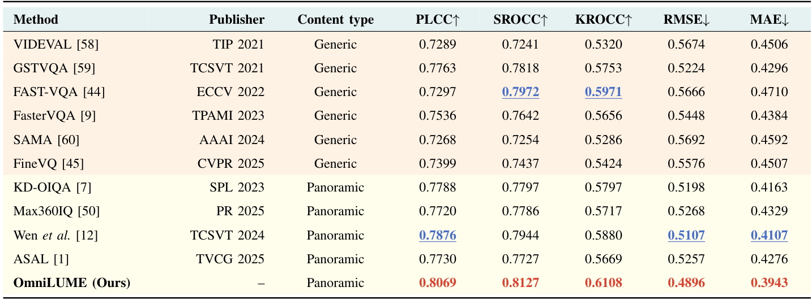
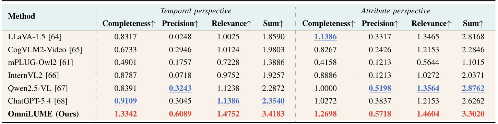
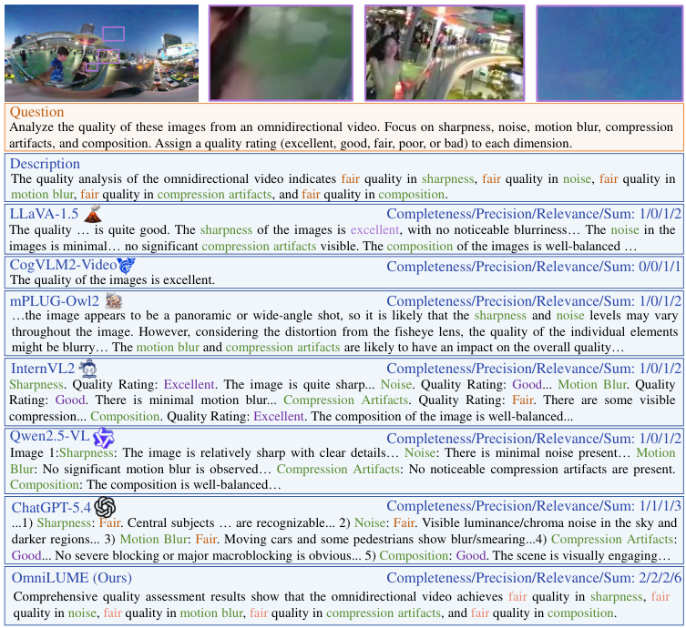

Unified quality modeling
A scanpath-oriented MLLM jointly predicts quality scores and detailed perceptual explanations for omnidirectional videos.
Omnidirectional video · Quality assessment · Quality understanding
A scanpath-oriented multimodal model that assesses 360° video quality
and explains it across perceptual attributes and viewing stages.
The idea
In a 360° video, viewers explore different regions over time. Their experience depends on both where they look and which quality factors they perceive.
OmniLUME models this viewing process with predicted and representative scanpaths, then produces an overall quality score and detailed explanations from temporal and attribute perspectives.

Paper overview
In recent years, the rapid proliferation of omnidirectional videos (ODVs) has increased the demand for blind visual quality assessment. Existing ODV quality metrics typically learn quality features given the single quality score. However, the quality assessment of ODVs remains challenging and non-trivial, as the existing methods fail to provide the insightful perspectives and explanations aligned with human perception and understanding. To address the limitation, we propose a novel scanpath oriented multimodal large language model (MLLM), towards Omnidirectional video quaLity Understanding and assessMEnt (named as OmniLUME), as the first attempt in this direction. Specifically, we first gather 269K quality annotations from two perspectives: temporal and attribute perspectives. Here, we consider eight fine-grained dimensions, including different video stages (e.g., initial stage) for the temporal perspective, and quality factors (e.g., compression artifacts) for the attribute perspective. These explanation-level annotations and corresponding text descriptions enable us to develop a scanpath oriented MLLM paradigm for jointly predicting score and detailed explanations regarding various dimensions in a unified network. The paradigm seamlessly incorporates scene and kinematic cues to mimic authentic viewing behaviors for producing viewport sequences. These sequences along with a matched representative viewport sequence are fed into the MLLM decoder to produce the quality score and textual quality description for the input ODV. Comprehensive experiments have demonstrated that OmniLUME consistently outperforms the comparing methods in both quality assessment and understanding for ODVs.
A scanpath-oriented MLLM jointly predicts quality scores and detailed perceptual explanations for omnidirectional videos.
VRQU enriches real-world 360° videos with human ratings and quality descriptions across eight dimensions.
Experiments examine quality scoring, quality understanding, viewing conditions, and synthetic streaming impairments.
How it works
Model viewing behavior, retrieve a representative path, and assess quality with multimodal instructions.

The spherical scene and kinematic aware predictor combines spatial scene structure, motion dynamics, color contrast, and kinematic constraints to sequentially select viewing directions.
A bank of human viewing priors is constructed with K-means. Cosine similarity retrieves the representative scanpath that best matches the anchor predicted path.
A vision encoder, text embedding layer, and MLLM decoder process the viewport sequences and quality instructions. Path-level scores are averaged, while textual outputs explain temporal and attribute quality.
The reported configuration uses two predicted scanpaths and one matched representative scanpath, a backbone initialized from mPLUG-Owl2, 1 fps frame sampling, and 448 × 448 input patches.
The dataset
Fine-grained quality annotations for real-world omnidirectional videos, extending the VRVQW dataset.
The subjective study involves 39 participants and covers cityscapes, landscapes, shows, sports, computer graphics, and other content. Quality descriptions are generated from the human ratings and manually reviewed.

What contributes to the perceived quality?
How does quality evolve during exploration?
Subjective scale: bad · poor · fair · good · excellent
Experimental results
Results below are reproduced from the supplied paper. Higher correlation and lower prediction error indicate better quality assessment.
OmniLUME achieves the best overall result across all five metrics against ten comparing methods on VRQU. Training and test sets are split at the content level in a 4:1 ratio to avoid content overlap.

On the synthetic adaptive-streaming dataset, OmniLUME reports 0.7314 PLCC, 0.7048 SROCC, and 0.5819 RMSE, achieving the best overall results among the compared methods in Table V.
The paper evaluates generated descriptions for completeness, precision, and relevance. OmniLUME achieves the highest scores for each criterion from both perspectives, with total scores of 3.4183 for temporal understanding and 3.3020 for attribute understanding.

A closer look
In the example from Figure 7, OmniLUME identifies fair quality across all five perceptual attributes, in agreement with the reference description.
“Comprehensive quality assessment results show that the omnidirectional video achieves fair quality in sharpness, fair quality in noise, fair quality in motion blur, fair quality in compression artifacts, and fair quality in composition.”
OmniLUME output · Figure 7

Read and explore